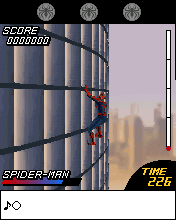

The native Spider-Man 2 game module wasn’t everything we needed to execute. It also came with a Micro3D module. We started from Katamari’s compatibility foundation to give both original modules a way to run.S201
Web Climber.

The original Web Climber scene with Spider-Man on the building. Retained 176×220 desktop game/Micro3D output.
Open the image for the full original view.
S290The retained original route entered Web Climber, with Up to climb, left/right to dodge and 5 to jump. Other minigames had their own number-matching, direction or web actions, while later unlocks remained the original game’s decision.S203S204
File seeks and native key events still needed this module’s exact contracts. A later center contact also needed to remain a center contact as it moved, rather than turning into a direction.S202S205
The kit label was not the whole test suite.
The shared kit described a newer suite, but its build target and inventory still pointed to older pieces. We corrected the JAR target, included the missing contact assertions and added the documented framework scenarios with real pointer dispatch. That brought the local checks into line with the kit we were using.S206
The original engine and four-way game mapping remained unchanged. Receiving a shared contact repair was not permission to infer a new simultaneous-direction behavior from Ashen. The original first-minigame checks and later shell checks kept their separate jobs.S206S207
About these records
This is the BREW Micro3D edition, distinct from Spider-Man VS Doc Ock’s Java ME game. Original minigame execution, save boundaries and virtual-clock checks are not a full playthrough of every score-locked mode. The image is historical original-runtime desktop output. Shared-kit metadata discrepancies and the local test repair are described as recorded, not as a global upstream change.
The receipts
Selected source lines, investigation notes and recorded feedback. Open a receipt for the original context and scope.
S201 / Katamari foundation loads the game’s own Micro3D moduleCheckpoint investigation notes
Source: SpiderMan_2_3D_Bridge_v0.1.2_PRIVATE_CHECKPOINT.zip / SpiderMan_2_3D_Bridge_v0.1.2_PRIVATE/IMPLEMENTATION.md · selected lines 3–5
Base: Katamari v0.1.0 CPU/BREW interpreter and Genesis-style Android presentation. No unrelated game is packaged. The original game module maps at 0x00100000. Its CreateInstance comparison establishes class ID 0x010279D7. When it requests Micro3D class 0x0101F0AA, the host maps the supplied `imicro3d.mod` at 0x00300000 with its own system-table prefix and invokes its original AEEMod_Load and module factory. Nested guest invocations preserve outer registers, flags, instruction mode and use a lower stack. No module instructions or game state are patched.
S290 / Historical image / Spider-Man 2 3DHistorical host capture
Source: SpiderMan_2_3D_Bridge_v0.1.2_PRIVATE/evidence/acceptance/05_native_3d_gameplay.png
Retained historical host output. Original emulator chrome, where present, is part of the unchanged source image. No phone capture or phone performance is inferred.
Unchanged historical image. Source member: SpiderMan_2_3D_Bridge_v0.1.2_PRIVATE/evidence/acceptance/05_native_3d_gameplay.png SHA-256: eb15b334aa0cd715626a30ee96eb549e033eb56cb03dce2aa743198e29b29c70 The original Web Climber scene with Spider-Man on the building. Retained 176×220 desktop game/Micro3D output. Scope: Historical original ARM/Micro3D host framebuffer, game only, zero EXIF. Not physical-phone gameplay.
S203 / Five original minigames keep their own controlsCheckpoint investigation notes
Source: SpiderMan_2_3D_Bridge_v0.1.2_PRIVATE_CHECKPOINT.zip / SpiderMan_2_3D_Bridge_v0.1.2_PRIVATE/README_FIRST.md · selected lines 17–29
## Original controls OK passes the title, selects Web Climber and starts the highlighted START option. Select the game's HELP option with an arrow and OK. Read the original contextual footer for L SOFT / R SOFT actions. - Web Climber: UP starts climbing; LEFT/RIGHT dodge; 5 jumps. - Rooftop Battle: match the displayed number; OK launches a special attack. - Swing Down: OK readies the attack; LEFT/DOWN/RIGHT attack in that direction. - Spider Chase: OK emits the web while swinging. - Vs. Doc Ock: LEFT/UP/RIGHT dodge; 5 attacks a red target. Mappings come from original howto_1.txt through howto_5.txt in res.dat and the original ARM input handler. Later games retain their original score unlocks. The native music symbol on L SOFT toggles sound where shown; the preserved initial profile starts with sound off. Original save.bin writes remain atomic on this phone; existing phone-local files take priority over the preserved initial profile. Scores, unlocks and when to save remain controlled by the original game.
S204 / First-minigame acceptance and its save boundaryCheckpoint investigation notes
Source: SpiderMan_2_3D_Bridge_v0.1.2_PRIVATE_CHECKPOINT.zip / SpiderMan_2_3D_Bridge_v0.1.2_PRIVATE/README_FIRST.md · selected lines 37–48
## Verification and limits - 74 original-game host checks passed, including unchanged game/Micro3D startup, all 20 native input latches/releases, menus/Help, Web Climber, motion/jump, native MIDI, 1224 callbacks and save serialization/reload. - 18 actual production-controller checks passed: scheduled deadlines, no input-driven timers, short taps, separate 5/OK, background release/suspension and resume. - 5,375 Spider-Man mapping/contact/geometry assertions passed across 28 device/density/orientation cases. - All twelve shared Android framework tests passed against the locally rebuilt v1.1.2 JAR; its compiled classes exactly match the shared classes compiled into this APK. - Seven integrated Android API 34 framework tests passed against the production Activity and APK resources, using actual Window/View/graphics/MotionEvent callbacks. Covered cold startup, safe areas, complete controls, stable renderer/modes, two-pointer sliding/action input, both release orders and the center guard in both modes, hardware ownership, duplicate 5 ownership, independent report callback, Back/cleanup, dialog key-up and startup fault recording. The real report writer also completed while the guest worker was blocked, correctly reported an intentionally unavailable Downloads destination, and retained its fallback/fault files. - APK original payload hashes, unchanged runtime source, signing continuity, DEX/icon packaging, signature and alignment passed. The Activity tests isolate/defer the guest boundary; they do not simulate game progress. Host UI previews replay a framebuffer produced by actual original-game host execution, not a phone capture. Gameplay evidence is separate in evidence/acceptance/. Not observed: physical phone launch/touch comfort/fit, audible phone playback, live successful Downloads export on a phone, phone heat, a full playthrough or later minigames. The save serializer was directly invoked on existing native score fields to test its genuine original file path; this does not establish a naturally earned completed-level save.
S202 / Original file-seek and key-event contractsCheckpoint investigation notes
Source: SpiderMan_2_3D_Bridge_v0.1.2_PRIVATE_CHECKPOINT.zip / SpiderMan_2_3D_Bridge_v0.1.2_PRIVATE/IMPLEMENTATION.md · selected lines 7–22
Compatibility added from observed calls: - BREW memory availability for this ABI: GetDeviceInfo memory field +24 and RAM allocation availability +0x18. - SYS_B +0xE4 ASCII-to-wide conversion, bounded by source length and destination byte capacity. - This title's IFile seek origins: 0=start, 1=end, 2=current; successful Seek returns the position. This is required for its original ZIP parser and original in-module decompressor. The original parser reads `res.dat`; no host replacement of game archive parsing is used. - Original 176x220 device surface matches the fixed 176x190 scene resources plus contextual footer. Display does not crop/stretch the framebuffer. - Host font raster and IDisplay.DrawText for original strings; palette/text/background colors retained. - Observed zero graphics translation and graphics hint calls. - IShell MIME-header detection for MIDI and MIDI media-handler class selection, letting original game code create IMedia and submit the unchanged original stream. - Separate original Micro3D instruction counter for reports/evidence. The original event handler at 0x1185E0 maps EVT_KEY 0x100 to its key latches and EVT_KEY_RELEASE 0x102 to the release function. EVT_KEY_PRESS 0x101 does not take that latch route. Numeric keys, 5, OK, all arrows, both softkeys, CLR, star and pound retain distinct native identities. Production key releases shorter than one guest callback are deferred until that callback has run at its actual registered deadline. Input does not pump or shorten timers. Background focus loss immediately releases all physical and deferred keys and cancels host callbacks. One game worker owns guest execution, native timers, audio callbacks and save persistence. A separate report executor copies already published evidence to Downloads via MediaStore on Android 10+; reports never acquire the runtime lock. Routine tracing stays OFF. Changed pixel revisions drive UI redraw. Battery/thermal samples are sparse (>=15 seconds); they are not CPU/GPU/skin measurements.
S205 / A center contact stays a center contactCheckpoint investigation notes
Source: SpiderMan_2_3D_Bridge_v0.1.2_PRIVATE_CHECKPOINT.zip / SpiderMan_2_3D_Bridge_v0.1.2_PRIVATE/README_FIRST.md · selected lines 7–11
This pass applies Wakka Bridge Gameplay UI Kit v1.1.2: actual game icon/title, BREW platform beneath the title, independent SAVE REPORT and three-dot utilities; a square sliding four-way D-pad; distinct center OK and prominent 5; both softkeys and Clear; direct ORIGINAL KEYPAD / D-PAD RETURN switching. The original keypad is inline and retains the separate complete D-pad, center OK, 5, both softkeys and Clear. Both layouts reserve the same measured slot: switching does not change the live renderer, viewport bounds, worker, original timers or game session. Controls reflow with minimum 48dp keys and a square pad at least 144dp. Status/navigation/cutout insets remain outside the gameplay layout. Spider-Man opts into one local kit extension preserving v0.1.0's center-contact ownership: a directional contact crossing the center does not press OK; a center contact does not turn into movement. The upstream v1.1.2 behavior remains the default for configurations that do not opt in. Guard ownership is now retained per stable pointer ID, without reverting the new contact union. The existing four-way game configuration is unchanged. See app/ui-kit/LOCAL_PATCH.txt and evidence/ui-kit-source-audit.json.
S206 / The kit’s old build label and missing test scenariosCheckpoint investigation notes
Source: SpiderMan_2_3D_Bridge_v0.1.2_PRIVATE_CHECKPOINT.zip / SpiderMan_2_3D_Bridge_v0.1.2_PRIVATE/IMPLEMENTATION.md · selected lines 34–38
# v0.1.2 UI Kit v1.1.2 normalization The production shared source now uses the supplied v1.1.2 per-pointer pad model and View event tracking. The existing opt-in center guard is ported as per-pointer metadata, removed on release/cancel, while upstream defaults and independent contact union remain intact. Spider-Man keeps the existing four-way touch configuration, separate OK/5 and native mappings; this update does not infer new simultaneous-direction gameplay behavior from Ashen. Original runtime, renderer, timing, input delivery, audio, saves, report executor and MainActivity are byte-identical except controller release/report version labels. The supplied kit includes stale build/verification pieces: BUILD.py targets a v1.1.1 JAR, omits TestPadContacts, and its framework source contains nine tests despite describing twelve. Local integration corrects the JAR target, includes the 107 contact assertions, and adds the three documented framework scenarios using stable pointer IDs and real MotionEvent dispatch. Baseline v1.1.1 fails the added combined-contact test. Supplied metadata is retained separately and current results are recorded under evidence/ and app/ui-kit/verification/LOCAL_RESULTS.json. The locally rebuilt shared JAR is compared class-for-class with production APK compilation. Source deltas are explicit in evidence/ui-kit-source-audit.json.
S207 / Seventy-four original checks with a virtual clockHistorical original-runtime host acceptance
Source: SpiderMan_2_3D_Bridge_v0.1.2_PRIVATE_CHECKPOINT.zip / SpiderMan_2_3D_Bridge_v0.1.2_PRIVATE/evidence/acceptance/acceptance.txt · selected lines 1–4
PASS 74 checks Game SHA256=4c983e872a782d088c4df757f249e263ef0599a58441db1d935cda691f264f61 Micro3D SHA256=faf98ae7b660765d357975f7b611f1210a9a61fe2b3e4a9a47ae50432543a95e Host virtual clock; no physical phone heat/audio/layout claim. First minigame tested; later minigames follow original score unlocks and are unobserved. Save serializer invoked directly with existing native fields; this does not prove a naturally earned completed-level save.